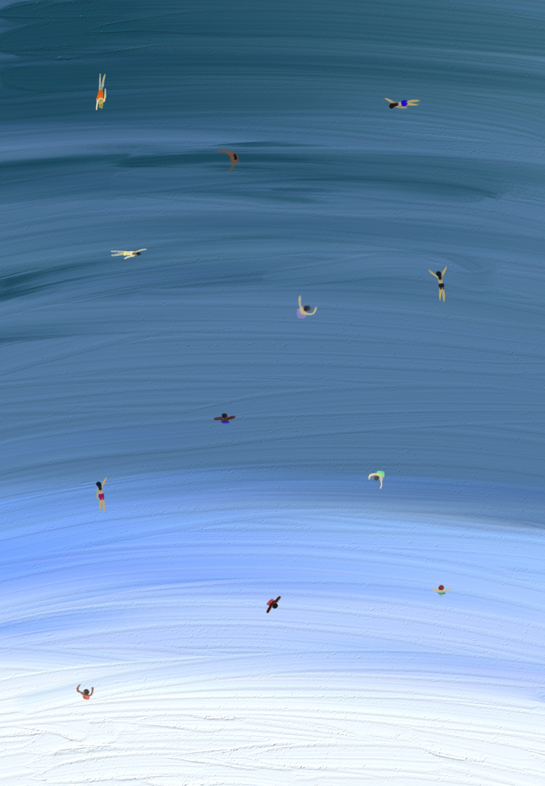

cartaz autoral
Mar
O mar das praias do Rio de Janeiro vai além do seu propósito original e se torna uma presença simbólica, carregada de significados afetivos e culturais. Para os cariocas o mar é mais que um oceano, é um território de memória, de constante renovação e de ligação íntima entre os indivíduos e a cidade. Ele se configura como um espaço que liga o carioca ao seu ambiente. Dessa forma, atua como um ponto de sossego, um espaço onde há saudade, pertencimento e calma.
O mar também é sinônimo de renovação. Ele é um espaço dinâmico, onde cada visita carrega novas experiências e perspectivas. É no mar que o carioca encontra a tranquilidade para escapar do caos urbano, um espaço que oferece estabilidade em meio às mudanças. Esse equilíbrio entre permanência e transformação torna o mar das praias cariocas um elemento essencial da vida na cidade.